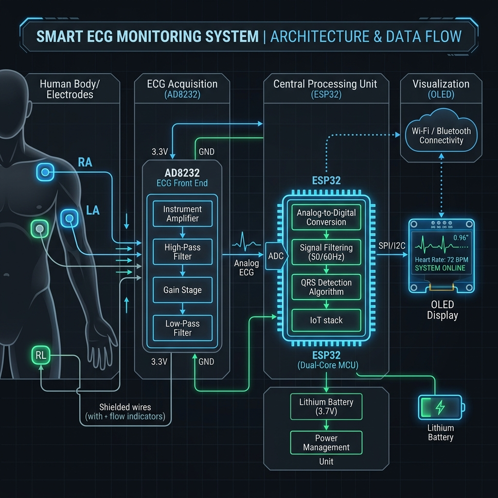
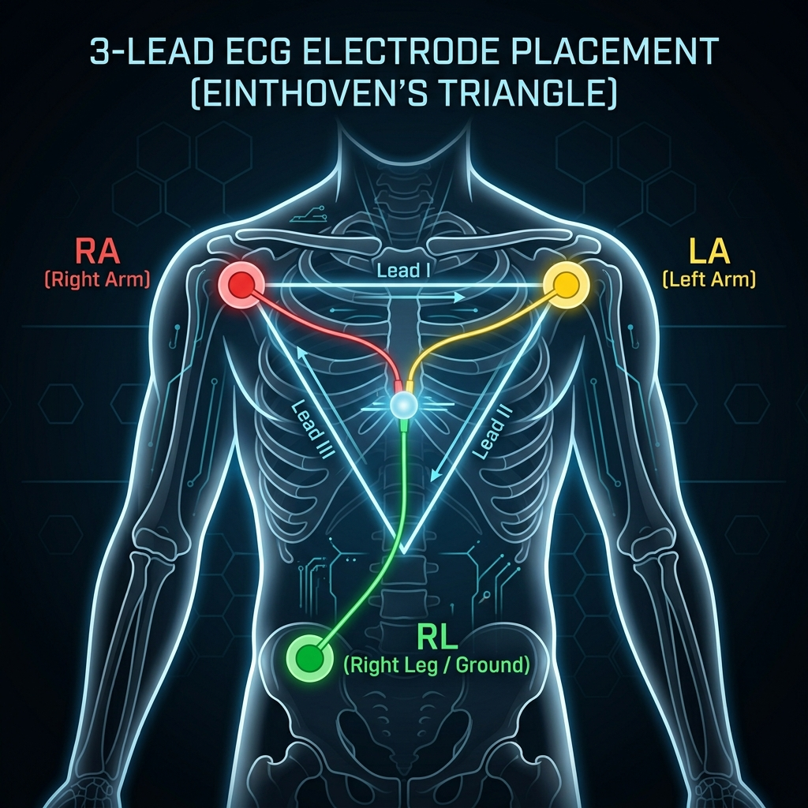
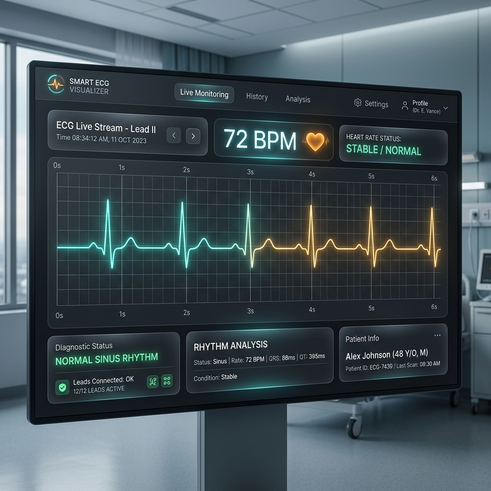

Smart ECG Monitoring System
Real-time cardiovascular telemetry utilizing an ESP32 microcontroller, digital IIR filtering, and an interactive Web Serial visualizer suite.
Team Members
Name 1, Name 2, Name 3
Department / Institution
Electronics & Communication Engineering
Technical Stack
ESP32, AD8232, OLED I2C, Web Serial, BLE
Introduction & Motivation
- Cardiovascular Health: Early warning systems for heart conditions like arrhythmia require continuous, comfortable bio-potential tracking.
- Mains Line Noise (50Hz/60Hz): Ambient electrical cabling emits electromagnetic fields that induce a massive signal noise over dry/wet electrode pads, drowning clinical ECG waves.
- Baseline Wander: Low-frequency interference (from chest expansion during inhalation/exhalation or posture shifts) displaces signals vertically, making peak extraction impossible.
- Traditional Hardware Limits: Medical-grade recorders are expensive, wired, and lack web portal capabilities for wireless digital tele-health.
Real-time Telemetry
Bridging hardware DSP filters and medical interface grids for reliable portable diagnostics.
System Architecture
The architectural layout splits processing blocks into analog front-end conditioning, digital computing, and dual-layer output networks:
- Transduction Block: Silver-chloride (Ag-AgCl) biomedical skin electrodes capture potential changes across the cardiac muscle.
- Analog Front End (AD8232): Amplifies weak signals ($G \approx 100$) and performs analog band-pass filtering to reject common-mode signals.
- Digital Conditioning Block: The ESP32 micro-controller samples the ADC lines, feeds data to sequential filter structures (DSP), and executes QRS threshold routines.
- Double-Output System: Telemetry is outputted locally to a 1.3" OLED and transmitted to external dashboard platforms using USB-UART serial and Bluetooth Low Energy (BLE) channels.

System Block DiagramHardware Connection Interface
The layout integrates the ESP32 development module with peripheral sensors, screens, and diagnostic beepers via specific GPIO interfaces:
| Peripherals | Peripheral Pin | ESP32 GPIO Pin | Signal Type | Operational Intent |
|---|---|---|---|---|
| AD8232 ECG Module | OUTPUT | GPIO 34 (ADC1_CH6) | Analog In | Continuous ADC sampling of raw cardiac potential |
| AD8232 ECG Module | LO+ / LO- | GPIO 33 / GPIO 32 | Digital Input | Lead off detection (Hysteresis-debounced) |
| 1.3" OLED Display | SDA / SCL | GPIO 21 / GPIO 22 | I2C Data/Clock | Plots waveform and prints BPM via U8g2 library (400kHz clock) |
| Buzzer Alarm | Positive (+) | GPIO 25 | Digital Output | Pulse click sound and audible alarms (Optional/Disabled) |
| Buzzer Alarm | Negative (-) | GND | Common Ground | Return path for audio buzzer signal |
| Power Bus | VCC / GND | 3.3V / GND | Power DC | Operating voltage for digital ICs and ECG IC |
Lead Placement & Einthoven's Triangle
Standard clinical records utilize three biological electrodes forming an imaginary triangle over the chest to trace electrical vectors:
- Red Electrode (RA - Right Arm): Attached to the upper right quadrant of the chest, immediately under the collarbone. Serves as the negative input.
- Yellow Electrode (LA - Left Arm): Attached to the upper left quadrant of the chest, under the left collarbone. Serves as the positive input.
- Green Electrode (RL - Right Leg): Placed over the lower left quadrant of the abdomen. Serves as the system ground reference (common-mode feedback).
- Einthoven Lead II Configuration: Emitted potential vector points from Right Arm (-) to Right Leg (+), maximizing the visibility of the primary R-wave.

Einthoven's Triangle configurationDigital Signal Processing (DSP) Pipeline
The sampled signal passes through three sequential real-time digital filtering blocks on-chip:
1. High-Pass DC Blocker
Removes baseline drift caused by patient respiration and movement.
α = 0.98, Cutoff ≈ 0.5 Hz.
2. 50Hz Notch Filter
Suppresses electromagnetic grid hum from AC power cabling (50Hz).
Sampling = 100Hz, r = 0.95.
3. Low-Pass EMA Filter
Smooths out muscle tremors (electromyographic) and RF noise.
β = 0.18, Cutoff ≈ 30 Hz.
QRS Peak Detection & BPM
- Ventricular Depolarization: The R-wave represents the highest amplitude event in a standard ECG complex.
- Decaying Adaptive Threshold: To prevent losing peaks due to changes in posture or skin contact, the threshold is computed dynamically:
PeakDecay: Pval ← Pval × 0.996
Threshold: T = Pval × 0.60 - Refractory Lockout: Upon a successful detection, a 320ms lockout window prevents double-counting T-waves or secondary noise peaks.
- BPM Averaging: Re-calculates BPM using R-R peak intervals. A 5-point moving ring buffer stabilizes the output:
BPM = 60000 / (R-R Interval in ms)
Adaptive Thresholding
Dynamic peaks are tracked in real-time, preventing flatlining or double-triggering anomalies.
Web Serial Diagnostics Suite
- Zero Installation: Coded in pure HTML5/CSS3/JavaScript. Runs instantly when opening the file in Google Chrome, Microsoft Edge, or Opera.
- Web Serial API: Direct hardware read over COM USB port without intermediate backend servers (Node/Python).
- Double-Buffered Canvas: Draws a clean, glowing scrolling sweep of ECG streams at 60 frames per second.
- Multi-Channel Visualization: Allows toggling between Raw ADC signals, clean filtered waves, or a dual overlay mode to review filter effects.
- Simulated Demo Mode: Features a mathematical physiological cardiac wave synthesizer to test diagnostic alarms without hardware connected.

Web Dashboard UIResults & Future Scope
- Filter Performance: Digital filtering blocks attenuate 50Hz hum and center ECG waves, outputting clinical-grade waveforms.
- Autoscale & Peak tracking: Screen maps auto-scale dynamically on the OLED, preserving wave details.
- Refractory validation: Ignored secondary waves and muscle tremor artifacts cleanly.
1. Integrate Edge-AI models (TensorFlow Lite Micro) to detect Premature Ventricular Contractions (PVCs) and Atrial Fibrillation directly on the ESP32.
2. Connect Wi-Fi telemetry to cloud servers (Firebase/AWS) for continuous IoT monitoring.
Project Accomplishments
Clinical-grade signal extraction at a hardware budget under $15.
Thank You!
Questions & Answers Session
Core References
1. Willem Einthoven, (1901). "Un nouveau galvanomètre."
2. AD8232 Chip Instrumentation Datasheets, Analog Devices.
3. ESP32 Technical Manuals, Espressif Systems.
Ready for deployment, hardware testing, and clinical trial simulations.